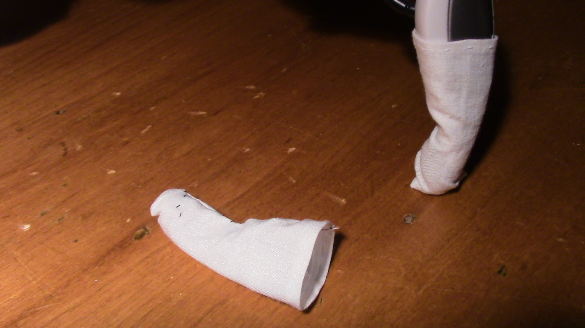

Quad Socks

In order to prevent the Roboquad's foot pads from being scuffed by hard surfaces, a cloth covering can be sewn to protect them. I call these coverings Quad Socks. The pattern for them can be downloaded as a PDF below. The pattern is not perfect, in fact, it is almost too small. Consider cutting the material a bit bigger than the template.